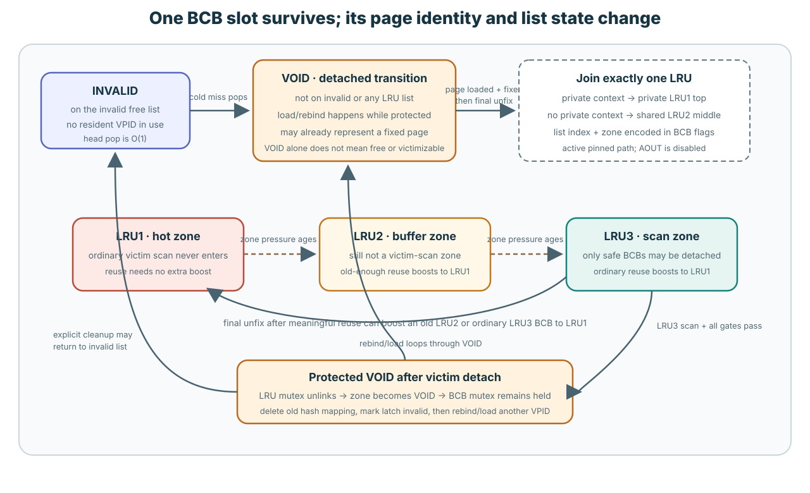
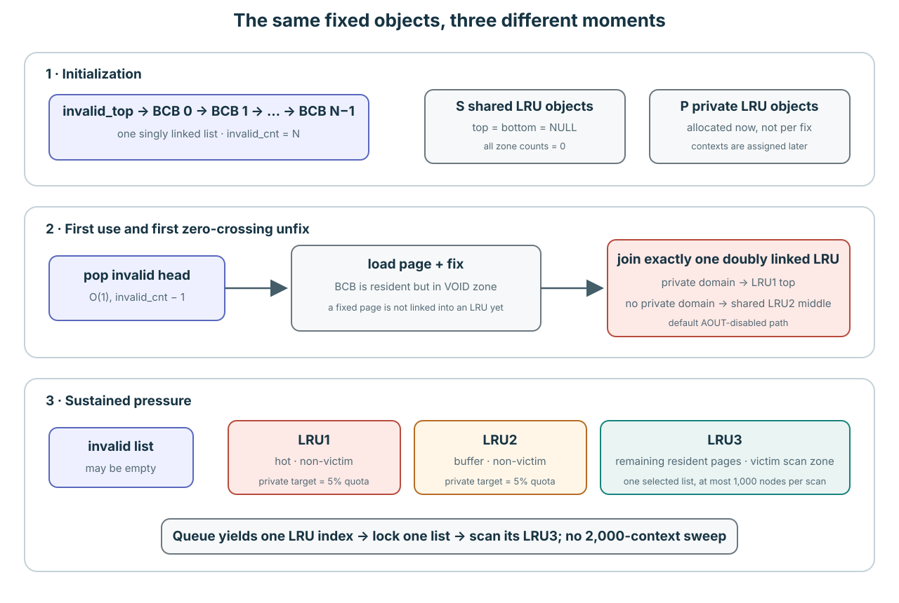
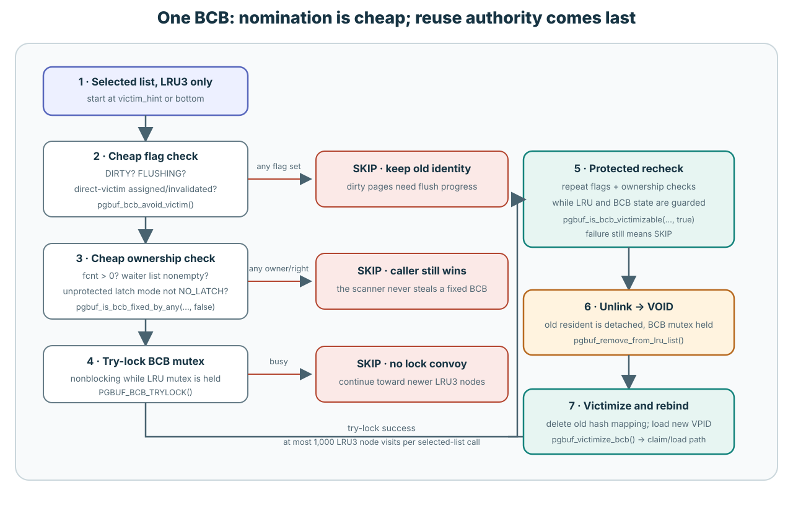
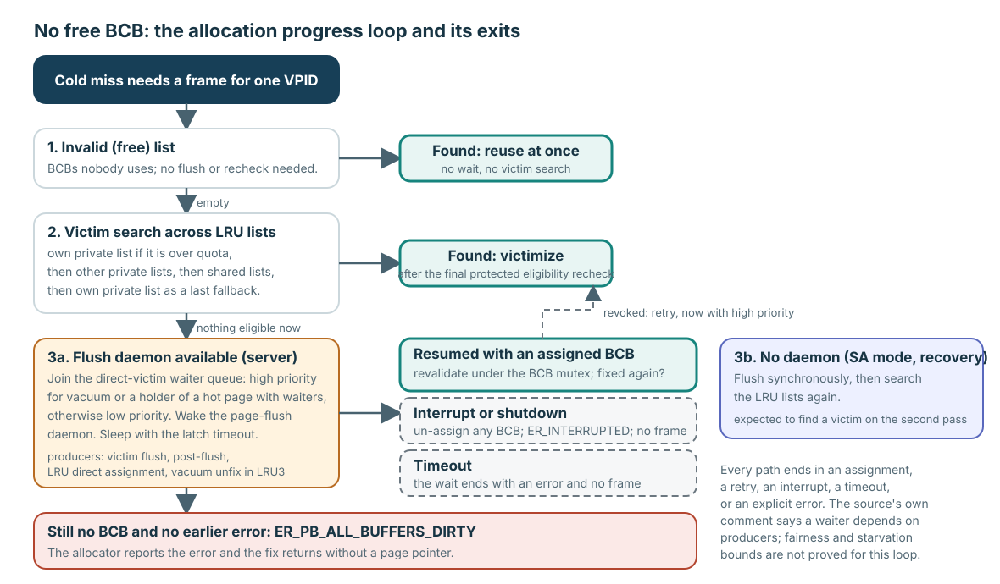

Page miss에 frame이 필요할 때 어디서 가져올까요?
사용하지 않은 BCB/frame pair가 INVALID list에 있으면 CUBRID가 그것을 꺼냅니다. Resident page를 제거하지 않습니다. INVALID가 비어야만 LRU의 차가운 끝에서 안전하게 replace할 resident page를 찾습니다.
Replacement는 고정된 BCB/frame pair 안의 VPID와 bytes를 바꿉니다. Pair를 새로 만들거나 BCB A를 다른 frame으로 바꾸지 않습니다.
짧은 경로는 INVALID pop → VOID에서 load → final unfix 때 LRU에 배치 → list pressure로 LRU3까지 demote → clean하고 idle인 LRU3 BCB를 detach 가능 → 이전 hash identity 제거 → 같은 pair를 rebind입니다.
VOID BCB는 모든 management list 밖에 있습니다

| 상태 | 쉬운 의미 | Victim search 여부 |
|---|---|---|
INVALID | Resident VPID 없이 전역 free/invalid singly linked list에 있습니다. | Allocation이 O(1)로 바로 꺼냅니다. |
VOID | INVALID에도 어떤 LRU에도 없습니다. Load 중, 첫 배치 전 fix 상태, 이동 중, protected detach 상태일 수 있습니다. | LRU scan에서 보이지 않습니다. |
LRU1 | 한 LRU의 뜨겁고 보호된 부분입니다. | 아니요. |
LRU2 | 보호된 second-chance 부분입니다. | 아니요. |
LRU3 | 차가운 부분이며 ordinary victim search가 보는 유일한 zone입니다. | 예. 그러나 safety check가 모든 node를 거부할 수 있습니다. |
새로 load한 resident page는 첫 fix가 끝날 때까지 계속 VOID일 수 있습니다. VPID가 resident hash에 이미 들어 있고 fcnt가 양수일 수도 있습니다. VOID만으로 identity, ownership, dirty state, overwrite 가능 여부는 알 수 없습니다. prev_BCB/next_BCB가 현재 INVALID나 LRU에 BCB를 연결하지 않는다는 뜻뿐입니다.
Verified mechanism: page_buffer.c:174–216,5559–5667,6636–6994,8904–8952,15860–15986.
List pressure가 BCB A를 점진적으로 차갑게 만듭니다

- Startup: A는 frame A와 영구적으로 짝지어진 INVALID-list node입니다.
- Page P의 첫 miss:
pgbuf_get_bcb_from_invalid_list()가 A를 꺼냅니다. A는 VOID가 되고 VPID P와 P의 bytes를 받은 뒤 fix됩니다. - 첫 final unfix: global
fcnt가 0이 되면 execution context의 enabled private-LRU assignment에 따라 private LRU1 top으로 가고, assignment가 없으면 shared LRU2 middle에 들어갑니다. 정확한 규칙은 Lesson 0012B가 설명합니다. - 차가워짐: 이후 삽입으로 protected zone이 threshold를 넘으면
pgbuf_lru_adjust_zones()가 오래된 boundary node를 LRU1 → LRU2 → LRU3로 내립니다. 시간만 흐른다고 A가 이동하지는 않습니다. - Second chance: P가 다시 fix되면 LRU3에서의 final unfix는 보통 A를 LRU1으로 올립니다. A가 victim candidate가 되려면 다시 차가워져야 합니다.
- Victim: A가 LRU3에서 clean하고 idle인 상태로 남으면 선택된 scan이 A를 lock하고 protected VOID로 detach할 수 있습니다.
- Rebind:
pgbuf_victimize_bcb()가 A를 재확인하고 resident hash에서 P를 제거한 뒤 miss path가 같은 A/frame pair에 page Q를 연결합니다.
“Candidate”, “detached”, “victimized”는 서로 다른 순간입니다. LRU3 membership은 A를 search 가능하게 만듭니다. Detach는 LRU에서 제거하지만 이전 P가 아직 hash에서 보입니다. Victimization이 P의 identity를 제거합니다. 그 후에야 Q가 이 pair를 받을 수 있습니다.
LRU3에 있는 것 외에도 모든 현재 상태가 안전해야 합니다

| 현재 BCB A | 현재 결과 | 이유 |
|---|---|---|
| INVALID | Victimization 없이 바로 할당 | 제거할 이전 resident page가 없습니다. |
| VOID, LRU1, or LRU2 | 검사하지 않음 | Ordinary victim search는 한 LRU3 chain만 따라갑니다. |
LRU3 + DIRTY | 건너뜀 | 변경된 bytes를 먼저 성공적으로 flush해야 합니다. |
LRU3 + FLUSHING | 건너뜀 | Write generation이 아직 in flight입니다. |
LRU3 + fcnt > 0 or waiter | 건너뜀 | Caller가 bytes를 소유하거나 기다리고 있습니다. |
LRU3 + non-NO_LATCH sample | 건너뜀 | Count 0이 latch transition 중에 관찰된 값일 수 있습니다. |
| LRU3 + direct-victim flag | Ordinary scan에서 건너뜀 | 다른 allocator handoff가 A를 참조합니다. |
| LRU3 + BCB try-lock failure | 이번 visit에서 건너뜀 | LRU mutex를 가진 채 A를 기다리지 않습니다. |
| Clean하고 idle인 LRU3, flag/waiter 없음, mutex와 protected recheck 성공 | A를 detach | BCB mutex를 유지하며 A가 LRU3 → VOID로 바뀝니다. |
pgbuf_get_victim_from_lru_list()는 이미 선택된 LRU index 하나를 받습니다. victim_hint 또는 bottom에서 시작해 prev_BCB를 따라 최대 1,000개의 BCB node를 봅니다. 1,000개 list나 모든 transaction을 순회하는 것이 아닙니다. Private threshold demotion D는 이 bounded walk 전에 일어날 수 있습니다.
Verified mechanism: page_buffer.c:221–263,9256–9538,16217–16228.
List membership은 transaction ownership이 아닙니다
Session은 이미 존재하는 private-list ID 하나를 빌릴 뿐 private cache를 받는 것이 아닙니다. 여러 session이 list를 공유할 수 있고, 다른 domain이 그 BCB를 fix할 수 있으며, assignment를 release해도 BCB를 비우지 않습니다.
CUBRID는 BCB가 안전해질 때까지 기다립니다

INVALID가 비었고 normal search도 실패하면 pgbuf_allocate_bcb()는 direct-victim waiter queue에 들어가 flush daemon을 깨울 수 있습니다. Producer가 BCB를 clean한 뒤 reserve할 수 있습니다. 소비하기 전에 다른 fix가 접근하면 reservation을 취소하고 allocator가 retry합니다.
DIRTY LRU3 BCB는 WAL-safe page write가 완료된 뒤에야 재사용할 수 있습니다. Write 중에는 FLUSHING이 replacement를 계속 막습니다. Page가 generation G+1로 다시 dirty해지면 그 새 debt가 direct assignment를 막습니다.
모든 allocation path는 assignment, retry, interrupt, timeout, explicit error 중 하나로 끝납니다. ER_PB_ALL_BUFFERS_DIRTY는 fallback error 이름이며 모든 BCB가 실제로 dirty였음을 증명하지 않습니다. Source는 특정 waiter의 wall-clock fairness를 증명하지 않습니다.
Verified mechanism: page_buffer.c:8181–8403,9067–9253,10925–10952,15420–15652,16972–17255.
지금 BCB A를 재사용할 수 있을까요?
A가 INVALID에 있는 상태에서 시작합니다. Page P를 A에 load하고 final-unfix한 뒤 LRU3까지 demote합니다. 그리고 A가 clean·idle인 경우, A가 DIRTY인 경우, scan 직전에 다른 thread가 A를 fix한 경우를 각각 생각해 보세요. 현재 list/zone, 처음 거부하는 field나 lock, A를 page Q에 rebind하기 전에 필요한 event를 말해 보세요.
먼저 네 함수만 따라가세요
pgbuf_allocate_bcb(), pgbuf_get_victim(), pgbuf_get_victim_from_lru_list(), pgbuf_victimize_bcb()를 읽습니다. 그다음 Lesson 12B에서 index와 list-selection model을 보거나 canonical Markdown에서 전체 policy와 cost map을 확인합니다.